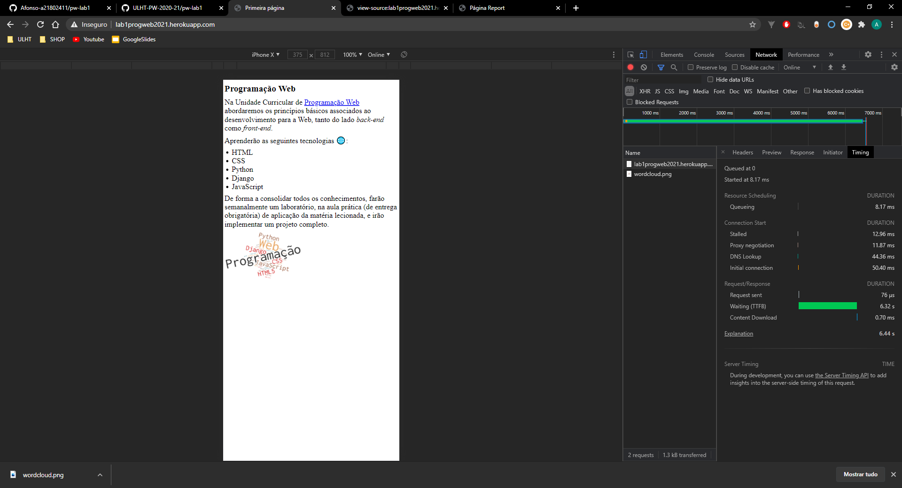

Para obter o endereço ip do computador, foi efetuada a pesquisa no google "what is my ip" e introduzido o ip no "whatismyipadress" para verificar a localização. Para observar do Heroku foram efetuadas as mesmas ações.
De forma a visualizar os routers que os pacotes passam até chegar ao destino (Irlanda), utilizou-se o comando "tracert" porém não foi possível chegar ao destino, pois o tracerout usa um protocolo que não é permitido pelo server, provavelmente por a firewall do mesmo proteger contra esse protocolo.
Através da "developer tools" na secção "Network" conseguimos perceber que recursos estão a ser enviados e recebidos. Ao clicar no nome do recurso temos a opção "Headers" para analisar dados dos Headers e a sua "source", o "Preview" para ver o recurso e o "Timing" que indica os tempos de resposta.
